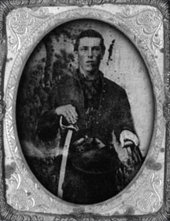

|

NAME: Johnadab Bowles
BORN: 1842
DIED: 1909
ALLEGIANCE: Union
HIGHEST RANK: Private
UNIT: 67th New York Infantry; 2nd U.S. Artillery, Battery G
RECORD: Joined in April 1861, 67th New York
Infantry. Enlisted in Battery G, 2nd U.S. Artillery, on
November 8, 1862. Fought at Fredericksburg,
Chancellorsville, Gettysburg, Culpeper Court House, Bristoe
Station, Mine Run campaign, Wilderness, Spotsylvania, Cold
Harbor.
|
|
In 1846 the Rev. George and Alice (Addock) Bowles
immigrated to the United States from Norfolk, England. They
settled along the shores of Lake Ontario in the small town
of Clyde, New York. George and Alice were the parents of 13
children, nine boys and four girls. Three of their boys,
James, Johnadab (or John) and Frederick, would fight for
their adopted country during the Civil War.
Born in England on April 30, 1842, John was the first to
answer President Lincoln's call for volunteers after the
firing on Fort Sumter. At the age of 18, he enlisted in
Company D of the 67th New York, also known as the 1st Long
Island Volunteers. James rose to the rank of second
lieutenant with the 9th New York Heavy Artillery, and in
1864 Frederick mustered into the 111th New York Infantry.
John was 5 feet 7 inches tall with hazel eyes and dark
hair. On June 20, 1861, he left for basic training at Fort
Schuyler, N.Y. He was missing for the roll call on August 5,
and military records list him as a deserter. The next time
his name appeared for roll call was March/April 1862. During
that absence his whereabouts were unknown.
On November 8, 1862, John enlisted in the 2nd U.S.
Artillery, Battery G, in accordance with General Order 154.
The battery was a horse artillery unit in the 3rd Division
of Maj. Gen. John Sedgwick's VI Corps. It consisted of six
12-pounder Napoleons under the command of Lieutenant John H.
Butler.
In December 1862, Union troops crossed the Rappahannock
River into Fredericksburg, Va. John first experienced the
carnage of war during the massive battle that followed.
Butler's battery was positioned on the far left of the Union
line and John was the No. 4 man (responsible for pulling the
lanyard) on the artillery team. John suffered a hearing loss
during the Battle of Fredericksburg that would affect him
for the remainder of his life.
Battery G was dismounted following the Battle of Cold
Harbor in June 1864 and ordered to defend Washington, D. C.
until August 1865. John received an honorable discharge
November 9, 1865, at Fort Schuyler. He returned home and
married Catherine McGowan on December 29, 1869, in Swain,
New York. They were the parents of five children.
After residing briefly in Swain, where John's family
operated a lumber and sawmill business, they eventually
settled in the small town of Canisteo, N.Y. Although he was
never wounded in battle, the war left John crippled with
severe hearing loss. He had difficulty working a full day
and held various odd jobs, primarily as a farm laborer. He
received a pension of $22 a month.
John survived many battles both famous and forgotten
throughout Virginia and Pennsylvania. He and Catherine both
died of carbon monoxide poisoning in their sleep on October
24, 1909. They are buried at Woodlawn Cemetery in Canisteo.
Source: Civil War Times Illustrated
45:4 (June 2006), 12.
|